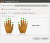
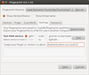

Fingerprint-GUI
Dieser Artikel wurde für die folgenden Ubuntu-Versionen getestet:
Ubuntu 16.04 Xenial Xerus
Ubuntu 14.04 Trusty Tahr
Zum Verständnis dieses Artikels sind folgende Seiten hilfreich:
Fingerprint GUI  ist ein Projekt, welches die Authentisierung mittels biometrischen Fingerabdrucks am PC ermöglicht. Es beinhaltet eine grafische Oberfläche (GUI) zum Erfassen der einzelnen Finger, ein Programm zum Testen der eingelesenen Finger und ein PAM-Modul, welches sich in die Authentisierungs-Infrastruktur des Rechners einbinden lässt.
ist ein Projekt, welches die Authentisierung mittels biometrischen Fingerabdrucks am PC ermöglicht. Es beinhaltet eine grafische Oberfläche (GUI) zum Erfassen der einzelnen Finger, ein Programm zum Testen der eingelesenen Finger und ein PAM-Modul, welches sich in die Authentisierungs-Infrastruktur des Rechners einbinden lässt.
Weiterhin ist zu beachten, dass ein gut gewähltes Passwort genau so sicher (oder auch sicherer) ist wie der Fingerabdruck, da Fingerabdrücke wider Erwarten leicht gefälscht werden  können. Der Fingerabdruckscanner ist also eher ein Komfortmerkmal als zusätzliche Sicherheit. Prinzipiell sollte man immer auch ein Kennwort einrichten, um sich im Falle von Handverletzungen nicht auszusperren.
können. Der Fingerabdruckscanner ist also eher ein Komfortmerkmal als zusätzliche Sicherheit. Prinzipiell sollte man immer auch ein Kennwort einrichten, um sich im Falle von Handverletzungen nicht auszusperren.
Mögliche Alternativen sind ThinkFinger oder fprint.
Installation¶
Zunächst sollten alle anderen Lösungen für den Fingerprint-Reader deinstalliert werden, auch wenn sie manuell installiert worden sind. Es müssen alle Binaries, Bibliotheken und alle anderen Dateien entfernt werden. Außerdem müssen alle Systemänderungen, die den Fingerabdruckscanner betreffen, wieder rückgängig gemacht werden (besonders die Dateien in /etc/pam.d/).
PPA¶
Fingerprint GUI ist nicht in den Paketquellen vorhanden, kann aber aus einem "Personal Packages Archiv"[1] installiert werden.
Adresszeile zum Hinzufügen des PPAs:
ppa:fingerprint/fingerprint-gui
Hinweis!
Zusätzliche Fremdquellen können das System gefährden.
Ein PPA unterstützt nicht zwangsläufig alle Ubuntu-Versionen. Weitere Informationen sind der  PPA-Beschreibung des Eigentümers/Teams fingerprint zu entnehmen.
PPA-Beschreibung des Eigentümers/Teams fingerprint zu entnehmen.
Damit Pakete aus dem PPA genutzt werden können, müssen die Paketquellen neu eingelesen werden.
Folgende Pakete müssen installiert[2] werden:
fingerprint-gui (ppa)
policykit-1-fingerprint-gui (ppa)
 mit apturl
mit apturl
Paketliste zum Kopieren:
sudo apt-get install fingerprint-gui policykit-1-fingerprint-gui
sudo aptitude install fingerprint-gui policykit-1-fingerprint-gui
Zudem kann noch die Bibliothek libbsapi installiert werden. Falls der eigene Scanner vom FPrint-Projekt unterstützt wird (Unterstützte Geräte siehe fprint-Wiki ), so kann die Bibliothek aus dem PPA installiert werden:
libbsapi (ppa)
mit apturl
Paketliste zum Kopieren:
sudo apt-get install libbsapi
sudo aptitude install libbsapi
Ist das eigene Gerät von UPEK, so kann deren proprietärer Treiber verwendet werden.
Achtung!
Änderungen am Login-Mechanismus, auch diejenigen, die das PPA vornimmt, können dazu führen, dass man sich nicht mehr am System anmelden kann. Gegebenenfalls müssen die vorgenommenen Änderungen an den Konfigurationsdateien mittels einer Live-CD oder im Recovery-Modus rückgängig gemacht werden. Am besten erstellt man vor der Installation Sicherheitskopien von den Dateien in /etc/pam.d. Die zentrale Rolle spielt die Datei /etc/pam.d/common-auth.
Deinstallation des PPAs¶
Das Paket policykit-1-fingerprint-gui ersetzt GNOMEs Standard-Policy-Kit (Paket: policykit-1-gnome). Möchte man fingerprint-gui und damit auch policykit-1-fingerprint-gui deinstallieren, so wird nicht automatisch wieder GNOMEs policykit-1-gnome installiert und man erhält unaufgelöste Abhängigkeiten zu wichtigen Programmen wie z.B. Nautilus.
Aus diesem Grund muss vor der Deinstallation der fingerprint-gui zunächst GNOMEs Policy-Kit installiert werden. Dies erfolgt z.B. mit dem Befehl:
sudo apt-get install policykit-1-gnome;
Anschließend kann das Paket entfernt werden, z.B. mit
sudo apt-get remove fingerprint-gui
Einrichtung mit der GUI¶
Nun sollte der Fingerscanner aktiv sein; und es ist an der Zeit, das Programm zur Erfassung der Finger zu starten. Dieses ist zu finden unter "Menü System -> Einstellungen -> Fingerprint Gui".
| Die einzelnen Reiter der Fingerprint Gui | ||
| Reiter | Erklärung | Bild |
| "Devices" | Unter Fingerprint Devices wird angezeigt welcher Scanner zur Zeit genutzt wird. Das Fenster "Devices" zeigt an welche weitere Hardware über den USB-Port angeschlossen ist. | |
| "Finger" | Hier kann man mit der Maus auswählen, welcher Finger eingelesen werden soll. |  |
| "Scan/Verify" | Zum eigentlichen Scannen des Fingers. War das Einlesen erfolgreich, so erscheint unter dem Fingerabdruck ein "OK". Nach dem erfolgreichen Einlesen können weitere Finger durch die Bestätigung von "YES" einscannt werden. | |
| "Settings" | Hier können die Einstellungen geprüft werden. |  |
| "Password" | Hier hat man die Möglichkeit, für Programme, die nicht über den Scanner geöffnet werden können, das Kennwort verschlüsselt auf einen USB-Stick abzulegen. Zum Beispiel lässt sich Seahorse nicht durch Fingerprint öffnen. Der USB-Stick muss dann aber am Port gesteckt sein. Möchte man keine USB-Stick nutzen, so muss das Kennwort nach dem Login oder aber zum Verbinden mit einem WLAN händisch eingegeben werden. Funktioniert jedoch seit Oneiric auch ohne Entschlüsselung des GNOME-Schlüsselbunds | |
Um einen Fingerabdruckscan zu verifizieren, reicht es, noch einmal auf den Reiter "Finger" und "Scan/Verify" zu klicken. Es erscheint ein Auswahldialog, in dem man gefragt wird, ob man einen neuen Finger scannen möchte oder aber einen schon eingescannten verifizieren möchte.
Beendet wird das Programm nach erfolgreicher Speicherung auf dem USB-Stick über "Finish" oder aber, wenn kein Stick gewählt wurde, über "Cancel".
Die gespeicherten Fingerabdrücke befinden sich /var/lib/fingerprint-gui/BENUTZERNAME.
Problembehebung¶
Die aktuelle Version 1.03 von fingerprint-gui hat zwar schon einen ziemlich stabilen Zustand erreicht, aber es gibt dennoch ein paar ungelöste Probleme:
auf dem LightDM-Anmeldebildschirm erscheint der fingerprint-Dialog nicht immer zuverlässig.
Gemäss den Anleitungen des Package Maintainer's sollte überprüft werden, dass die Datei polkit-gnome-authentication-agent-1.desktop bzw. polkit-kde-authentication-agent-1.desktop tatsächlich aus dem Ordner /etc/xdg/autostart/ entfernt wurde. Ggf. genügt es, sie umzubenennen. Bei einer allfälligen Deinstallation von Fingerprint GUI genügt es dann, den Dateinamen wieder herzustellen (vgl. des PPAs Bemerkungen zur Deinstallation). Vor einem Neutstart sollte man das System testen.
Deaktivieren in LightDM bei verschlüsseltem Homeverzeichnis¶
Wenn das Homeverzeichnnis verschlüsselt ist, kann man sich nach dem Hochfahren nicht über mit Hilfe eines Fingerabdrucks anmelden, da der Schlüssel im verschlüsselten Bereich liegt. Wer nun zum Anmelden nur noch das Passwort verwenden will kann folgendes tun:
In LightDM wird normalerweise die Datei common-auth aufgerufen, die die Anmeldemöglichkeiten (Passwort oder Fingerprint) verarbeitet. Diese wird nun mittels cp kopiert gleichzeitig umbenannt, wo für Root-Rechte notwendig sind [3][4]:
sudo cp /etc/pam.d/common-auth /etc/pam.d/common-auth-nofinger
Danach öffnet man die common-auth-nofinger mit dem Texteditor mit Root-Rechtenb[4][5] und kommentiert die folgende Zeile mit dem Rautzeichen # aus:
#auth [success=2 default=ignore] pam_fingerprint-gui.so try_first_identified debug
Nun muss man noch in LightDNM die neue common-auth-nofinger aufrufen. Dazu wird die Datei /etc/pam.d/lightdmbearbeitet. Die folgende Zeile von
@include common-auth in
nach
@include common-auth-nofinger
umbenennen. Somit wird nun nach dem Hochfahren nicht mehr nach dem Fingerabdruck gefragt. Für die Befehle sudo, gksu, su etc. kann er aber weiterhin benutzt werden.
Anmelden nicht mehr möglich¶
Von einer Live-CD aus oder im Recovery-Modus: kann man die in einem Terminal die Datei common.auth im Verzeichnis /etc/pam.d editieren und dabei die Zeile mit dem fingerprint-gui mittels vorgestelltem "#" Zeichen auskommentieren. Anschließend sollte das Anmelden wieder funktionieren.
- Erstellt mit Inyoka
-
 2004 – 2017 ubuntuusers.de • Einige Rechte vorbehalten
2004 – 2017 ubuntuusers.de • Einige Rechte vorbehalten
Lizenz • Kontakt • Datenschutz • Impressum • Serverstatus -
Serverhousing gespendet von